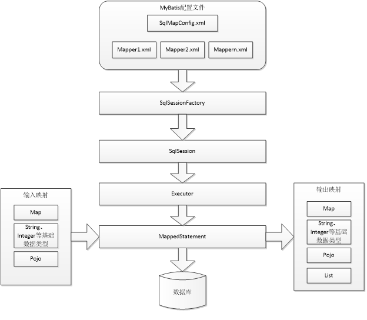

MyBatis 本是apache的一个开源项目iBatis, 2010年这个项目由apache software foundation 迁移到了google code，并且改名为MyBatis 。2013年11月迁移到Github。 MyBatis是一个优秀的持久层框架，它对jdbc的操作数据库的过程进行封装，使开发者只需要关注 SQL 本身，而不需要花费精力去处理例如注册驱动、创建connection、创建statement、手动设置参数、结果集检索等jdbc繁杂的过程代码。 Mybatis通过xml或注解的方式将要执行的各种statement（statement、preparedStatemnt、CallableStatement）配置起来，并通过java对象和statement中的sql进行映射生成最终执行的sql语句，最后由mybatis框架执行sql并将结果映射成java对象并返回。
传统jdbc编程步骤:
存在的问题:
Mybatis与Hibernate的比较:

Mybatis核心包:mybatis-3.2.7.jar
依赖包: lib文件夹下的所有jar包
驱动包: Mysql或者oracle驱动包
SqlMapConfig.xml是mybatis核心配置文件，配置文件内容为数据源、事务管理。
<?xml version="1.0" encoding="UTF-8"?>
<!DOCTYPE configuration
PUBLIC "-//mybatis.org//DTD Config 3.0//EN"
"http://mybatis.org/dtd/mybatis-3-config.dtd">
<configuration>
<environments default="development">
<environment id="development">
<transactionManager type="JDBC"></transactionManager>
<dataSource type="POOLED">
<property name="driver" value="com.mysql.jdbc.Driver" />
<property name="url" value="jdbc:mysql://localhost:3306/mybatis01?characterEncoding=utf-8" />
<property name="username" value="root" />
<property name="password" value="root" />
</dataSource>
</environment>
</environments>
<mappers>
<mapper resource="User.xml"/>
<mapper resource="mapper/UserMapper.xml"/>
</mappers>
</configuration>
Sql映射文件是用来建立方法与Sql语句之间的映射关系的.
<?xml version="1.0" encoding="UTF-8"?>
<!DOCTYPE mapper
PUBLIC "-//mybatis.org//DTD Mapper 3.0//EN"
"http://mybatis.org/dtd/mybatis-3-mapper.dtd">
<mapper namespace="usersql">
<select id="findUserById" parameterType="Integer" resultType="sch.frog.pojo.User">
select * from user where id = #{id}
</select>
<select id="findUserLikeOne" parameterType="String" resultType="sch.frog.pojo.User">
select * from user where username like "%${value}%"
</select>
<select id="findUserLikeOnePre" parameterType="String" resultType="sch.frog.pojo.User">
select * from user where username like "%"#{username}"%"
</select>
<insert id="insertUser" parameterType="sch.frog.pojo.User">
insert into user(username, sex, address, birthday) values(#{username}, #{sex}, #{address}, #{birthday})
</insert>
<insert id="insertUserReturnId" parameterType="sch.frog.pojo.User">
<selectKey keyColumn="id" keyProperty="id" order="AFTER" resultType="int">
select last_insert_id()
</selectKey>
insert into user(username, sex, address, birthday) values(#{username}, #{sex}, #{address}, #{birthday})
</insert>
<update id="updateUser" parameterType="sch.frog.pojo.User">
update user set username = #{username}, sex = #{sex}, address = #{address}, birthday = #{birthday} where id = #{id}
</update>
<delete id="deleteUser" parameterType="Integer">
delete from user where id = #{id}
</delete>
</mapper>
* #{}表示一个占位符号, 通过#{}可以实现preparedStatement向占位符中设置值, 自动进行java类型和jdbc类型转换。#{}可以有效防止sql注入, #{}可以接收简单类型值或pojo属性值。 如果parameterType传输单个简单类型值，#{}括号中可以是value或其它名称。
${}表示拼接sql串，通过${}可以将parameterType 传入的内容拼接在sql中且不进行jdbc类型转换， ${}可以接收简单类型值或pojo属性值，如果parameterType传输单个简单类型值，${}括号中只能是value。insert, delete, update
insert标签下, 主键返回: 有时候, 需要在添加一条记录之后立即返回该记录的主键, 这时候需要用到主键返回方式:
<insert id="insertUserReturnId" parameterType="sch.frog.pojo.User">
<selectKey keyColumn="id" keyProperty="id" order="AFTER" resultType="int">
select last_insert_id()
</selectKey>
insert into user(username, sex, address, birthday) values(#{username}, #{sex}, #{address}, #{birthday})
</insert>
这里需要注意的是order的属性有两个, 分别是BEFORE, AFTER, 可以分以下几种情况讨论:
注意, 返回的主键会自动封装到输入参数相关字段中
上面配置好了核心配置文件, 同时配置好了sql映射, 就可以根据sql映射的id找到指定的sql语句并执行.
String config = "SqlMapConfig.xml";
InputStream inputStream = Resources.getResourceAsStream(config); //找到指定的核心配置文件
SqlSessionFactory sessionFactory = new SqlSessionFactoryBuilder().build(inputStream); //加载核心配置文件, 得到session工厂对象
SqlSession session = sessionFactory.openSession(); //创建一个用于和数据库交互的session
List<User> users = session.selectList("usersql.findUserLikeOne", "小"); //执行指定的sql语句
session.close(); //关闭session
selectOne和selectList的区别:
上面的演示用, 通过session的方法, 区寻找指定的sql语句, 可以直接执行对应的sql语句. 但是这样不符合面向对象的编程思想, 可维护性差. 正确的方式应该是使用Dao层作为sql语句执行的层, 来进行开发.
Mybatis的DAO开发方式有两种:
原始的dao层开发实际上很简单, 就是将上面直接执行sql映射中的sql语句封装到每一个dao层对应实现类指定方法中.
private SqlSessionFactory sessionFactory;
public UserDaoImpl(SqlSessionFactory sessionFactory){
this.sessionFactory = sessionFactory;
}
@Override
public User selectOneUser(Integer id) {
SqlSession session = sessionFactory.openSession();
User user = session.selectOne("usersql.findUserById", id);
session.close();
return user;
}
...
原始dao层开发的存在的问题:
采用Mapper动态代理的方式做dao层开发, dao层不需要实现类, 只需要有mapper接口(相当于dao接口)即可. 但是需要满足以下规范:
只要满足上面四条规范, 就可以使用下面的代码:
//加载核心配置文件以及sql映射文件
SqlSessionFactory sessionFactory = new SqlSessionFactoryBuilder().build(Resources.getResourceAsStream("sqlMapConfig.xml"));
//创建session
SqlSession session = sessionFactory.openSession();
//获取Mapper动态代理对象(有mybatis进行动态代理)
UserMapper mapper = session.getMapper(UserMapper.class);
//执行动态代理对象的某一方法, mybatis, 根据指定的方法名, 到sql映射文件中找到指定的statement语句, 执行指定的sql语句
List<User> users = mapper.findAll();
//关闭session
session.close();
mybatis官方推荐使用mapper代理方法开发mapper接口，程序员不用编写mapper接口实现类，使用mapper代理方法时，输入参数可以使用pojo包装对象或map对象，保证dao的通用性。
SqlMapConfig.xml中配置的内容和顺序如下：
properties（属性）
settings（全局配置参数）
typeAliases（类型别名）
typeHandlers（类型处理器）
objectFactory（对象工厂）
plugins（插件）
environments（环境集合属性对象）
environment（环境子属性对象）
transactionManager（事务管理）
dataSource（数据源）
mappers（映射器）
注意： MyBatis 将按照下面的顺序来加载属性
jdbc.driver=com.mysql.jdbc.Driver
jdbc.url=jdbc:mysql://localhost:3306/mybatis?characterEncoding=utf-8
jdbc.username=root
jdbc.password=root
<properties resource="db.properties">
<!-- 在properties内部用property定义属性 -->
<!-- 如果外部配置文件有该属性，则内部定义属性被外部属性覆盖 -->
<property name="jdbc.username" value="root123" />
<property name="jdbc.password" value="root123" />
</properties>
<!-- 和spring整合后 environments配置将废除 -->
<environments default="development">
<environment id="development">
<!-- 使用jdbc事务管理 -->
<transactionManager type="JDBC" />
<!-- 数据库连接池 -->
<dataSource type="POOLED">
<property name="driver" value="${jdbc.driver}" />
<property name="url" value="${jdbc.url}" />
<property name="username" value="${jdbc.username}" />
<property name="password" value="${jdbc.password}" />
</dataSource>
</environment>
</environments>
在 properties 元素体内定义的属性首先被读取。 然后会读取properties 元素中resource或 url 加载的属性，它会覆盖已读取的同名属性。
<typeAliases>
<!-- 单个别名定义 -->
<typeAlias alias="user" type="cn.itcast.mybatis.pojo.User" />
<!-- 批量别名定义，扫描整个包下的类，别名为类名（大小写不敏感） -->
<package name="cn.itcast.mybatis.pojo" />
<package name="其它包" />
</typeAliases>
这样在mapper.xml配置文件中，就可以使用设置的别名了. 别名大小写不敏感, 例如iNT是对的.
以下采用包扫描的方式来配置sql映射.
Mapper.xml映射文件中定义了操作数据库的sql，每个sql是一个statement，映射文件是mybatis的核心。
resultType可以指定将查询结果映射为pojo，但需要pojo的属性名和sql查询的列名一致方可映射成功。 如果sql查询字段名和pojo的属性名不一致，可以通过resultMap将字段名和属性名作一个对应关系 ，resultMap实质上还需要将查询结果映射到pojo对象中。resultMap可以实现将查询结果映射为复杂类型的pojo，比如在查询结果映射对象中包括pojo和list实现一对一查询和一对多查询。
举例:
<resultMap type="sch.frog.pojo.Order" id="OrderMap">
<id property="id" column="id"/>
<!--建议加上主键id的映射, 尽管一样-->
<result property="userId" column="user_id"/>
<!--没有指定对应映射的字段还会使用默认字段名-->
</resultMap>
<select id="findAllOrders" resultMap="OrderMap">
select * from orders
</select>
通过mybatis提供的各种标签方法实现动态拼接sql。
<select id="findUserByWhere" parameterType="sch.frog.pojo.User" resultType="sch.frog.pojo.User">
select * from user
<where>
<if test="sex != null">
and sex = #{sex}
</if>
<if test="username != null and username != ''">
and username like "%"#{username}"%"
</if>
</where>
</select>
上面这个statement可以生成以下sql语句:
<select id="findUserByForeach" parameterType="Integer" resultType="sch.frog.pojo.User">
select * from user
<where>
<!--
id in (1,10,26,28)
foreach : 遍历输入参数
collection ： 要遍历的集合名称
当输入参数类型是数组类型时，那么collection = array
当输入参数类型是集合类型时，那么collection = list
当输入参数类型是POJO对象类型时，那么collection = 对象属性名
item: 遍历的每一个元素的名称:注意：这个名称必须和后面的占位符中的参数一致
separator: 遍历的分隔符;当遍历到最后一位时，不会帮我们添加分隔符了！
open： 遍历的前缀
close:遍历的后缀
-->
<foreach collection="list" item="item" open="id in(" close=")" separator=",">
#{item}
</foreach>
</where>
</select>
这个statement可以生成sql语句:
sql片段:
<sql id="selectAll">
select * from user
</sql>
<select id="findOne" parameterType="Integer" resultType="sch.frog.pojo.User">
<include refid="selectAll"/> where id = #{value}
</select>
上面可以拼接成select * from user where id = ?
sql片段的作用是用来提取sql语句中的重复代码
MyBatis只能有一对多和一对一
一对一查询时, 主要还是对返回值封装的问题. 由于需要查询出来的值可能是两个对象中的字段, 所以需要返回对象中拥有两个对象. 有以下解决方法:
pojo包装类:
public class OrderAndUser extends Order{
private String username;
private String address;
get/set...
}
mapper:
public List<OrderAndUser> findOrderUser();
mapper.xml:
<select id="findOrderAndUser" resultType="sch.frog.vo.OrderAndUser" >
select orders.id, orders.user_id as userId, orders.number, orders.createtime,
`user`.username, `user`.address from orders left join `user` on orders.user_id = `user`.id
</select>
pojo类:
public class Order {
// 订单id
private int id;
// 用户id
private Integer userId;
// 订单号
private String number;
// 订单创建时间
private Date createtime;
// 备注
private String note;
private User user;
}
mapper.xml:
<resultMap type="sch.frog.pojo.Order" id="OrderMap">
<id property="id" column="id"/>
<result property="userId" column="user_id"/>
<association property="user" javaType="sch.frog.pojo.User">
<id property="id" column="user_id"/>
<result property="address" column="address"/>
<result column="username" property="username"/>
</association>
</resultMap>
<select id="findOne" parameterType="Integer" resultMap="OrderMap">
SELECT
orders.id,
orders.user_id,
orders.number,
orders.createtime,
`user`.username,
`user`.address
FROM
orders
LEFT JOIN `user` ON orders.user_id = `user`.id
WHERE
orders.id = #{id}
</select>
mapper类:
public Order findOne(Integer id);
一对多时, 可以采用上面的第二种方式进行映射(resultMap).
<resultMap type="sch.frog.pojo.User" id="UserWithOrders">
<id property="id" column="id"/>
<result property="username" column="username"/>
<result property="birthday" column="birthday"/>
<result property="sex" column="address"/>
<result property="address" column="address" />
<collection property="orders" javaType="list" ofType="sch.frog.pojo.Order">
<id property="id" column="oid"/>
<result property="number" column="number"/>
<result property="note" column="note"/>
<result property="createtime" column="createtime"/>
</collection>
</resultMap>
<select id="findUserWithOrdersById" parameterType="Integer" resultMap="UserWithOrders">
SELECT
`user`.id,
`user`.username,
`user`.birthday,
`user`.sex,
`user`.address,
orders.id AS oid,
orders.number,
orders.createtime,
orders.note
FROM
`user`
LEFT JOIN orders ON `user`.id = orders.user_id
WHERE
`user`.id = #{id}
</select>
配置如上.其余略.
注意, 关联映射时, 想要封装到对象里的字段必须全部在resultMap中映射出来, 否则, 不会自动封装. 也就是说上面不能写成:
<resultMap type="sch.frog.pojo.User" id="UserWithOrders">
<id property="id" column="id"/>
<collection property="orders" javaType="list" ofType="sch.frog.pojo.Order">
<id property="id" column="oid"/>
</collection>
</resultMap>
所需jar包: spring的jar包 Mybatis的jar包 Spring+mybatis的整合包。 Mysql的数据库驱动jar包。 数据库连接池的jar包。
<bean id="sqlSessionFactory" class="org.mybatis.spring.SqlSessionFactoryBean">
<!-- 配置mybatis核心配置文件 -->
<property name="configLocation" value="classpath:SqlMapConfig.xml" />
<!-- 配置数据源 -->
<property name="dataSource" ref="dataSource" />
</bean>
首先dao层的类继承SqlSessionDaoSupport类, 该类内部有setSqlSessionFactory方法, 并且有getSqlSession方法. 可以方便进行SqlSession的访问.
所以dao层这样配置:
<bean id="UserDao" class="sch.frog.dao.UserDaoImpl">
<property name="sqlSessionFactory" ref="sqlSessionFactory"></property>
</bean>
其余mapper映射的配置略. dao层代码如下:
public List<User> findAll() {
SqlSession session = getSqlSession();
List<User> list = session.selectList("userMapper.findAll");
return list;
}
所以, 如下测试即可:
@Test
public void demo01(){
ApplicationContext ac = new ClassPathXmlApplicationContext("applicationContext.xml");
UserDao userDao = (UserDao) ac.getBean("UserDao");
List<User> list = userDao.findAll();
for (User user : list) {
System.out.println(user);
}
}
<bean id="UserMapper" class="org.mybatis.spring.mapper.MapperFactoryBean">
<!-- 配置Mapper接口 -->
<property name="mapperInterface" value="sch.frog.mapper.UserMapper" />
<!-- 配置sqlSessionFactory -->
<property name="sqlSessionFactory" ref="sqlSessionFactory" />
</bean>
单元测试:
@Test
public void demo02(){
ApplicationContext ac = new ClassPathXmlApplicationContext("applicationContext.xml");
UserMapper mapper = (UserMapper) ac.getBean("UserMapper");
List<User> list = mapper.findAll();
for (User user : list) {
System.out.println(user);
}
}
上面这种配置方式, 需要读取sqlMapConfig.xml, 到里面找到映射文件. 更方便的方式是开启包扫描. 并将包扫描交给Spring来管理.
<bean class="org.mybatis.spring.mapper.MapperScannerConfigurer">
<!-- 配置Mapper接口 -->
<property name="basePackage" value="sch.frog.mapper" />
</bean>
这样sqlMapConfig.xml中就不需要配置任何东西了. Spring实例化MapperScannerConfigurer对象后, 扫描指定包中所有mapper.class和mapper.xml, 并代理所有mapper对象, 使用是直接通过getBean获取即可(注: 每个mapper代理对象的id就是类名首字母小写)
这里最终的applicationContext.xml内容如下:
<?xml version="1.0" encoding="UTF-8"?>
<beans xmlns="http://www.springframework.org/schema/beans"
xmlns:context="http://www.springframework.org/schema/context"
xmlns:p="http://www.springframework.org/schema/p"
xmlns:aop="http://www.springframework.org/schema/aop"
xmlns:tx="http://www.springframework.org/schema/tx"
xmlns:xsi="http://www.w3.org/2001/XMLSchema-instance"
xsi:schemaLocation="http://www.springframework.org/schema/beans
http://www.springframework.org/schema/beans/spring-beans-4.0.xsd
http://www.springframework.org/schema/context
http://www.springframework.org/schema/context/spring-context-4.0.xsd
http://www.springframework.org/schema/aop
http://www.springframework.org/schema/aop/spring-aop-4.0.xsd
http://www.springframework.org/schema/tx
http://www.springframework.org/schema/tx/spring-tx-4.0.xsd
http://www.springframework.org/schema/util
http://www.springframework.org/schema/util/spring-util-4.0.xsd">
<context:property-placeholder location="classpath:db.properties" />
<bean id="dataSource" class="org.apache.commons.dbcp.BasicDataSource"
destroy-method="close">
<property name="driverClassName" value="${jdbc.driver}" />
<property name="url" value="${jdbc.url}" />
<property name="username" value="${jdbc.username}" />
<property name="password" value="${jdbc.password}" />
<property name="maxActive" value="10" />
<property name="maxIdle" value="5" />
</bean>
<bean id="sqlSessionFactory" class="org.mybatis.spring.SqlSessionFactoryBean">
<property name="configLocation" value="classpath:SqlMapConfig.xml" />
<property name="dataSource" ref="dataSource" />
</bean>
<bean class="org.mybatis.spring.mapper.MapperScannerConfigurer">
<property name="basePackage" value="sch.frog.mapper" />
</bean>
<beans>
使用官方网站的Mapper自动生成工具mybatis-generator-core-1.3.2来生成po类和Mapper映射文件
仅仅是一个工具, 用于快速生成常用mapper的.
项目已经搭建好. 只需要更改:
即可, 最终生成4个文件:
在mapper.java中会生成常用的增删改查方法: 例如:
List<User> selectByExample(UserExample example);
User selectByPrimaryKey(Integer id);
其中selectByPrimaryKey是根据主键id查询记录, selectByExample是条件查询, 如果example为null就是查询所有.
直接上例程, 不用再添加任何配置, 配置mapper扫描即可. 关键是@Param注解
List<Customer> findForPageWithQueryVO(@Param("pageVo") Page<Customer> pageVo, @Param("queryVo")QueryVo queryVo);
对应mapper文件:
<select id="findForPageWithQueryVO" resultMap="customer">
SELECT
customer.cust_id,
customer.cust_name,
customer.cust_phone,
customer.cust_mobile,
b1.dict_item_name as cust_source,
b2.dict_item_name as cust_industry,
b3.dict_item_name as cust_level
FROM
customer
LEFT JOIN base_dict b1 ON customer.cust_source = b1.dict_id
LEFT JOIN base_dict b2 ON customer.cust_industry = b2.dict_id
LEFT JOIN base_dict b3 ON customer.cust_level = b3.dict_id
<where>
<if test="queryVo.custName != null and queryVo.custName != ''">
AND cust_name like "%"#{queryVo.custName}"%"
</if>
<if test="queryVo.custSource != null and queryVo.custSource != ''">
AND b1.dict_id = #{queryVo.custSource}
</if>
<if test="queryVo.custIndustry != null and queryVo.custIndustry != ''">
AND b2.dict_id = #{queryVo.custIndustry}
</if>
<if test="queryVo.custLevel != null and queryVo.custLevel != ''">
AND b3.dict_id = #{queryVo.custLevel}
</if>
</where>
LIMIT #{pageVo.start}, #{pageVo.pageSize}
</select>